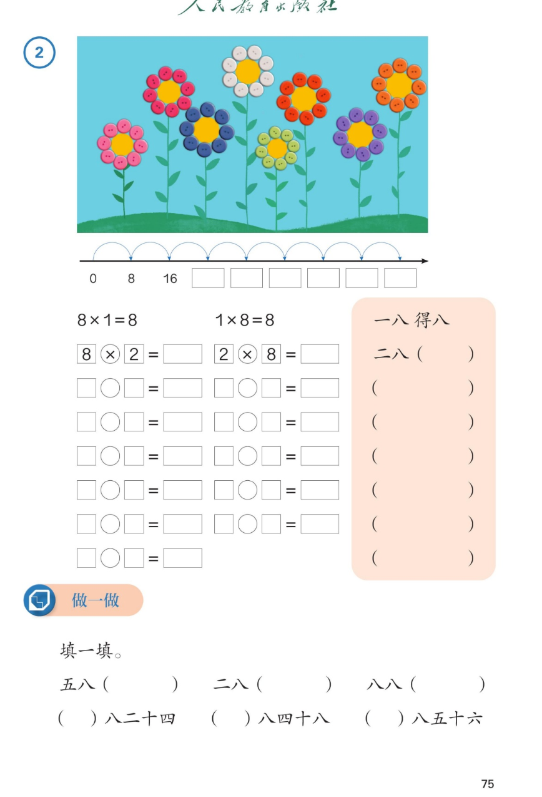

🔊 五、7~9 的表内乘、除法 · 课本第 75 页 · 8 的乘法口诀
人教版《数学》二年级上册 · 有声图文带读 · 先想后看解析 · 纽扣花编口诀
题数
6
认知
2
强化
3
拓展
1
本页重点
数轴每次加8 · 8句口诀 · 八八六十四
🎧 分两步学：
① 解析教材图片
——纯声音读图，读到哪一块哪一块闪动提示；关键处先倒计时让你思考，再在图片下方给出解析并朗读。
② 分层提问练习
——六道分层题（认知 / 强化 / 拓展），先思考再展开解析、朗读参考答案；这一步不再回到图片。
也可以随时点任意一句话、图上任意一块单独听；点课本文字卡还会展开答案。
教材图片（点块听读，读到哪块哪块闪）

📖 人教版《数学》二年级上册 · 课本第 75 页 · 图片仅供个人学习，版权归人民教育出版社所有
🤔 想一想（点我可跳过）
课本的文字（点句子：听读 + 看答案）
纽扣与数轴
几个 8 就是多少？
看答案 ▾
1 个 8 是
8
；2 个 8 是
16
；3 个 8 是
24
；4 个 8 是
32
；
5 个 8 是
40
；6 个 8 是
48
；7 个 8 是
56
；8 个 8 是
64
；
💡 数轴上每次跳一格，就多加一个 8
为什么
8×8 为什么只有一道算式？
看答案 ▾
交换因数：8×8 换过来
还是 8×8
；
所以 8 的口诀里只有八八六十四
一道算式、一句口诀
；
想想前面学的：七七四十九、六六三十六也一样。
口诀全览
8 的乘法口诀（8 句）
看答案 ▾
一八得八 → 二八十六 → 三八二十四 → 四八三十二；
五八四十 → 六八四十八 → 七八五十六 → 八八六十四；
💡 相邻两句口诀的得数都相差 8
编口诀
怎样编出 8 的口诀？
看答案 ▾
第一步：数出
几个 8 是多少
（8、16、24……64）；
第二步：照前面的样子写：二八十六、三八二十四……；
口诀用
小数在前、大数在后
，读起来顺口。
分层提问练习（先想后看解析）
🌸
认知
每朵花用几颗纽扣？3 朵花用了多少颗？
看解析
🤔 想一想
解析：
每朵花用
8 颗
纽扣；
3 朵花：3×8=
24
，口诀
三八二十四
。
✖️
认知
8×4 和 4×8 各等于多少？用哪句口诀？
看解析
🤔 想一想
解析：
8×4=32，4×8=
32
；
口诀：
四八三十二
。交换因数得数不变。
🧩
强化
做一做里的（ ）八二十四，括号里填几？怎么想的？
看解析
🤔 想一想
解析：
括号里填
三
：3×8=
24
，口诀三八二十四；
同一页还有：（六）八四十八、（七）八五十六；
💡 想口诀时把得数放中间：几八二十四
📈
强化
五八和八八各得多少？相邻两句口诀相差几？
看解析
🤔 想一想
解析：
五八
四十
，八八
六十四
；
相邻两句都相差
8
：40→48→56→64；
💡 忘了口诀时，从前一句加 8 推出来
🧠
强化
记不住七八得多少，有什么办法想出来？
看解析
🤔 想一想
解析：
办法一：想
六八四十八
，48+8=
56
；
办法二：想
八八六十四
，64−8=56；
💡 口诀之间相差 8，能推着算
🌈
拓展
生活里哪些问题要用 8 的乘法口诀？
看解析
🤔 想一想
解析：
螃蟹有 8 条腿，5 只螃蟹 5×8=
40 条腿
；
一盒鸡蛋 8 个，3 盒 3×8=
24 个
；
🌈 章鱼、桌子腿、饼干盒里都藏着 8
① 解析教材图片
② 分层提问练习
⏹ 停止
纯声音 + 高亮跟随 · 想好才出解析
← 返回导航